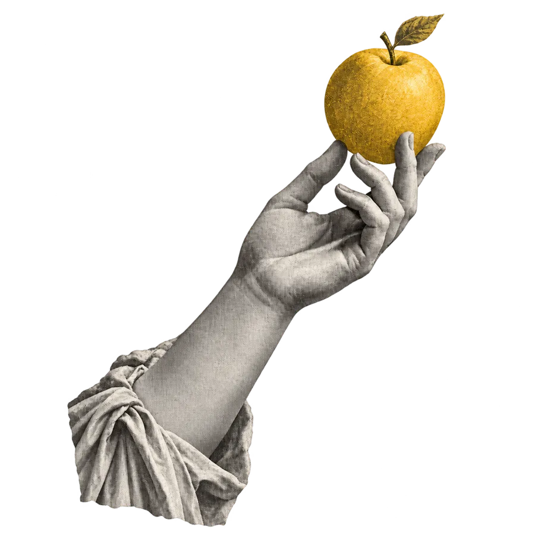

Everyone is building faster. Direction still gets lost.
A coding agent can ship a page in half an hour. It can also ship the wrong page in half an hour — wrong layout, wrong tone, a hero nobody asked for — and you find out at the end.
Prompts are a poor place to keep a design decision. Screenshots drift. Figma is a different world from the code.
Deciding should start the build — not another round of rework.
